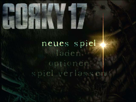
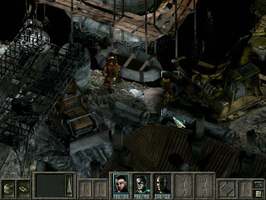

Gorky 17: Das dunkle Vermächtnis
Dieser Artikel wurde für die folgenden Ubuntu-Versionen getestet:
Ubuntu 14.04 Trusty Tahr
Zum Verständnis dieses Artikels sind folgende Seiten hilfreich:
November 2008. Die Geheimdienste verschiedener NATO-Staaten berichten unabhängig voneinander, das russische Militär habe Gorky 17, eine seiner "geheimen Städte" dem Erdboden gleichgemacht. Niemand weiß warum. Gorky 17 war die exakte Nachbildung einer typischen amerikanischen Stadt. Sie wurde von den Russen zur Ausbildung perfekter Spione genutzt. Das russische Militär behauptet, die Stadt sei verlassen gewesen und der einzige Grund für ihre Zerstörung eine verspätete "Aufräumaktion". Aber bei der NATO weiß man nur zu gut, daß Gorky 17 mehr war, als ein Trainingslager für Agenten. Gorky 17 war auch ein Hochsicherheitsgelände für militärische Experimente...
|  |  |
| Menü | Spieleszene |
Installation¶
Zur Installation des Spiels die Datei setup.sh von der CD-ROM aufrufen [1] [2]:
./setup.sh
Anschließend den aktuellen Patch einspielen und auf Wunsch einen Menüeintrag [3] vornehmen. Alternativ kann das Spiel über gorky17 gestartet [4] werden.
Es können zusätzliche Startparameter übergeben werden.
LGP¶
Alternativ den neuen Installer new_installer.run von holarse-linuxgaming.de  herunterladen und zur Installation verwenden. Vorher müssen die Ausführrechte [5] gesetzt werden.
herunterladen und zur Installation verwenden. Vorher müssen die Ausführrechte [5] gesetzt werden.
Hinweis:
Es stehen alternative Server zur Verfügung.
Patch¶
Die erforderlichen Patches können von holarse-linuxgaming.de heruntergeladen und nach dem setzen der Ausführrechte [4] installiert [1] wreden.
Demo¶
Ein Demo kann von LGP  heruntergeladen und wie die Vollversion installiert werden,
heruntergeladen und wie die Vollversion installiert werden,
Probleme & Lösungen¶
No available audio device¶
Sofern das Spiel nicht auf die Soundkarte zugreifen kann installiert [6] man das Paket
pulseaudio-utils
 mit apturl
mit apturl
Paketliste zum Kopieren:
sudo apt-get install pulseaudio-utils
sudo aptitude install pulseaudio-utils
und erweitert den Startbefehl des Spiels mit dieser Lösung mit einem vorangestellten padsp:
padsp gorky17

Infobox¶
| Gorky 17: Das dunkle Vermächtnis | |
| Originaltitel: | Odium |
| Genre: | Strategie |
| Sprache: |    |
| Veröffentlichung: | 2006 |
| Publisher: | Linux Game Publishing |
| Systemvoraussetzungen: | 300 MHz x86-Prozessor - 64 MB RAM - 500 MB Festplattenplatz |
| Medien: | CD (1) |
| Strichcode / EAN / GTIN: | 83555100010 |
| Läuft mit: | nativ |

- Erstellt mit Inyoka
-
 2004 – 2017 ubuntuusers.de • Einige Rechte vorbehalten
2004 – 2017 ubuntuusers.de • Einige Rechte vorbehalten
Lizenz • Kontakt • Datenschutz • Impressum • Serverstatus -
Serverhousing gespendet von